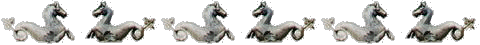

Venetian Fortresses in Greece
Venetian Fortresses in Greece
A traveller in Greece
is most obviously interested in visiting temples and sites of the
classical world.
Little attention is paid to the many other interesting memories of
Greek history during the Byzantine Empire and after the fall of
Constantinople until the emergence of the Greek Kingdom in the XIXth
century.
Venice played a role in
Greece for nearly a thousand years. A possession of the Byzantine
Empire, Venice gained political independence in the VIIIth century as a
result of the reaction to the Iconoclasm imposed by the Emperor Leo the
Isaurian and later on became an independent Republic maintaining strict
relationships with Constantinople as the Cathedral of St Mark's
testifies.
Venice was allied with the Byzantine Empire in restraining the
expansion of the Normans who, after seizing Bari, the last Byzantine
stronghold in the west, had conquered Dyrrachium (today in Albania and
known as Durrres) in 1081 and attempted to reach Constantinople. Venice
sent a fleet to help the Emperor Alexius I and in return was granted
trading concessions within the Empire, thus gaining a predominant role
in Mediterranean trade.
The First Crusade weakened the Byzantine Empire and Venice profited by
gaining some bases in the Ionian Islands to support trade. In 1125 the
little port of Modon in the Peloponnese secured for Venice the control
over the maritime route between the Ionian and the Aegean seas.
As a reaction to a massacre of Venetian traders in Constantinople,
Venice manoeuvered the Fourth Crusade into an expedition against
Constantinople and ended up with the possession of Crete, Euboea and
several other islands in the Aegean Sea.
The expansion of Venice continued until the Ottoman conquest of
Constantinople in 1453. Soon after that the Sultans started a series of
wars to gain possession of the Venetian bases. This process lasted more
than three centuries. Only in 1715 with the fall of Tinos the Aegean
Sea was freed from Venetian presence, but the Ionian Islands were
retained by Venice until the Republic fell as a result of the first
Italian campaign of Napoleon.
Venice had no large army, but had a powerful fleet, so the strategy to
retain the Greek possessions was based on building fortresses which
could resist the Turkish attack until help could arrive from the sea.
To achieve this in 1542 a Magistracy of Fortresses was established,
which had jurisdiction over fortifications in the maritime and mainland
dominions, and over the arsenals of sea territories of the Republic.
The map (1900 Times Atlas) shows the fortresses built or occupied by
the Venetians in Greece. By hovering on the blue dots you can read the
name of the fortress (the names are those given by the Venetians) and
by clicking on them you move to the related page. For fortresses in
Crete the link is to a page giving a brief overview of the Venetian
rule over the island and with the links to the page of each fortress.
You may refresh your knowledge of the history of Venice in the Levant
by reading an abstract from the History of Venice
by Thomas Salmon, published in 1754. The Italian text is
accompanied by an English summary. You can also read a 1692 description
(in Italian only) of the fortresses of Morea and of some other locations.

In the Ionian Islands:
Corfù
(Kerkyra)
Santa
Maura (Lefkadas)
Cefalonia
(Kephallonia)
Asso (Assos)
Zante
(Zachintos)
Cerigo
(Kythera)
In the Greek mainland:
Parga
Preveza and
Azio (Aktion)
Vonizza
(Vonitsa)
Lepanto
(Nafpaktos)
Atene (Athens)
In Morea:
Castel di Morea
(Rio), Castel di Rumelia (Antirio) and Patrasso (Patra)
Castel
Tornese (Hlemoutsi) and Glarenza
Navarino
(Pilo) and Calamata
Modon
(Methoni) and Corone (Koroni)
Braccio di
Maina, Zarnata, Passavà and Chielefà
Mistrà
Corinto
(Korinthos)
Argo (Argos)
Napoli di
Romania (Nafplio)
Malvasia
(Monemvassia)
In the Aegean Sea:
Negroponte
(Chalki)
Castelrosso
(Karistos)
Oreo
Kimi
Schiatto
(Skiathos)
Scopello
(Skopelos)
Alonisso
Schiro
(Skyros)
Andro (Andros)
Tino (Tinos)
Egina (Aegina)
Spezzia
(Spetse)
Nasso (Naxos)
Milo (Milos)
Stampalia
(Astipalea)
Scio (Chios)
Lemno (Limnos)
Candia (Kriti)
(in the background of this page a relief showing the winged
lion, symbol of Venice)
Other pages dealing with fortresses:
Fortresses of
the Popes
The Castle
of Spoleto
Gregoriopolis
and the Castle of Julius II
Coast of
the Pirates (Castles between Panfilia and Cilicia)
Caterina's
Bequest (Frankish and Venetian monuments in Cyprus)

Go to my Home
Page on Baroque Rome or to my Home Page on Rome
in the footsteps of an XVIIIth century traveller.

See the latest
additions!
|